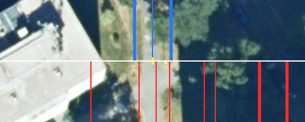
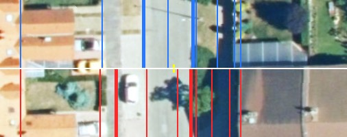
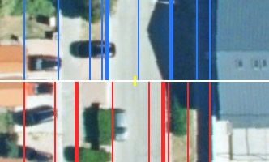
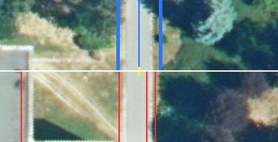
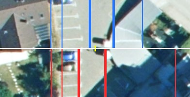
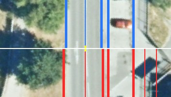
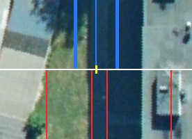
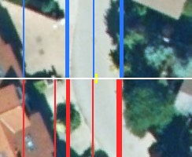
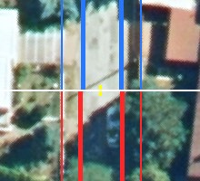

Pasporty slovenských měst: bez pasportu (nahoře, modře) a s pasportem (dole, červeně)
Řez zleva (A) doprava (B), ±10 m podél ulice, 10 px = 1 m. Silné čáry = okraje vozovky, tenké = ostatní hranice, žlutá = střed řezu, * = odhad. Ortofoto © GKÚ Bratislava, NLC (ZBGIS, CC BY 4.0).

ke1 · (bez názvu) (kosice)
bez pasportu: pruh 3* · pruh 3*
s pasportem: zelen 7.9* · chodnik 2.75 · zelen 2.2* · chodnik 5.7 · plocha 1.85* · zelen 7.2* · pruh 4.47*

ke4 · Bratislavská (kosice)
bez pasportu: zelen 11.85* · chodnik 6* · pruh 3.6* · pruh 3.6* · chodnik 0.5* · stromorad 3.1* · chodnik 2.55* · zelen 0.91*
s pasportem: plocha 11.55* · chodnik 2.35 · pruh 4.5* · pruh 4.5* · krajnice 1.9* · plocha 0.75* · stromorad 2.35* · chodnik 2.6 · plocha 1.6*

ke8 · Bratislavská (kosice)
bez pasportu: zelen 4.2* · chodnik 3.89* · stromorad 1.5* · chodnik 0.61* · pruh 3.95* · pruh 3.95* · zelen 3.2* · chodnik 1.62*
s pasportem: plocha 3.8* · chodnik 2.65 · pruh 4.5* · pruh 4.5* · krajnice 1.65* · plocha 0.7* · zelen 2.45* · chodnik 2.67

ke10 · (bez názvu) (kosice)
bez pasportu: pruh 3* · pruh 3*
s pasportem: stromorad 13.75* · chodnik 3.95 · nezname 1.2*

ke13 · (bez názvu) (kosice)
bez pasportu: zelen 2.26* · chodnik 5.7* · obsluzna 4.9* · chodnik 6*
s pasportem: zelen 2.15* · chodnik 3.45* · obsluzna 5.5 · plocha 14.45*

ke14 · Popradská (kosice)
bez pasportu: pruh 3.97* · pruh 3.33* · chodnik 1.35* · parkovani 5.25*
s pasportem: pruh 4.51* · pruh 3.63* · plocha 1.05* · parkovani 5.25* · cyklostezka 2.38* · chodnik 2.38*

ke16 · (bez názvu) (kosice)
bez pasportu: pruh 3* · pruh 3*
s pasportem: zelen 6.45* · chodnik 2.2 · zelen 9.2*

ke17 · Novobanská (kosice)
bez pasportu: chodnik 5.5* · pruh 3.43* · pruh 3.43*
s pasportem: plocha 3.95* · chodnik 1.6 · pruh 3.22* · pruh 3.22* · chodnik 0.35*

ke19 · Diamantová (kosice)
bez pasportu: chodnik 2.25* · pruh 4.2* · chodnik 2.22*
s pasportem: zelen 2* · pruh 4.6* · zelen 2.05*